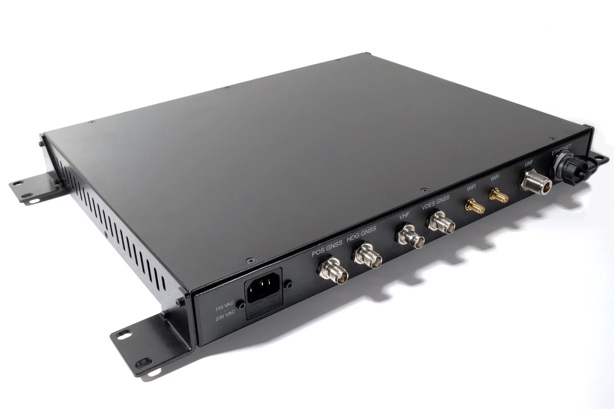
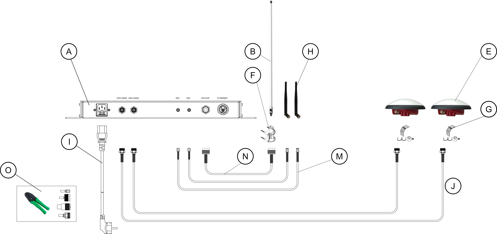

CanalNav-VR
VDES Ready NPPU
PCA-approved Non-Portable Piloting Unit for NeoPanamax vessels, delivering centimetre-level RTK positioning and accurate heading with a fully integrated Class A AIS transponder that eliminates the need for a separate AIS installation. The CanalNav-VR is VDES-ready, providing shipowners with a clear upgrade path to next-generation maritime communications as international standards evolve toward VDES.

System Capabilities
Integrated compliance with high-precision positioning.
Since January 1, 2024, the Panama Canal Authority (PCA) requires all NeoPanamax vessels to carry a fixed Non-Portable Piloting Unit (NPPU) with Real-Time Kinematics (RTK) positioning. CanalNav-VR meets this requirement fully while delivering capabilities that extend well beyond canal compliance, including an integrated Class A AIS transponder and a clear upgrade path to VDES as international maritime regulations evolve.
Integrated Class A AIS
Fully compliant Class A AIS transponder built in that removes the need for a separate AIS installation on board. Delivers complete operational AIS functionality in all waters, inside and outside the canal, from day one.
Crew-ready Installation
Supplied complete with pre-configured antennas, cables and mounting brackets. Designed for straightforward crew installation without specialist engineering support, reducing port time and third-party costs.
Clear VDES upgrade path
The CanalNav-VR unit requires no replacement to support future VDES capability. Upgrading from the combined antenna configuration to full Class A AIS and VDES readiness requires only an antenna reconfiguration. This preserves the vessel's core installed hardware investment as fleet requirements and international standards evolve.
Fully Compliant with Global Shipbuilding Specifications
CanalNav-VR is engineered for seamless integration into new-build outfitting programmes, meeting current shipyard scope requirements without compromise. Designed to minimise installation complexity and bridge footprint, it delivers full PCA compliance alongside the connectivity and interface standards expected by classification societies and vessel operators worldwide.
Single Combined Antenna
Fully compatible with combined VHF/UHF antenna installations as specified in current new-build scopes. One antenna with one cable run reduces topside complexity and simplify outfitting without any compromise to PCA compliance or system performance.
Bridge & ECDIS Integration
Native support for IEC 61162-450 Ethernet and RS422 interfaces ensures direct integration with ECDIS and bridge alert management systems per IEC 62923. Position and heading data are available vessel-wide from a single certified source.
Pilot Software Compatibility
Fully compatible with SEAiq Pilot and Trelleborg SafePilot, the piloting software platforms in active use by PCA-licensed pilots. No additional configuration or third-party adaptation required at commissioning.
Compact Low-Power Footprint
Operating at under 20W, CanalNav-VR connects directly to existing bridge backup power without additional UPS infrastructure. Compact form factor minimises rack space, simplifying integration into new-build bridge layouts.

Shipped in standard commercial configuration. All antennas, cables and mounting hardware are included with no additional procurement required.
Complete System Delivery
Everything required for installation, included as standard.
CanalNav-VR ships as a complete, installation-ready package. No auxiliary components, connectors or cabling need to be sourced separately. Every item required for a full crew installation is included and pre-configured:
- CanalNav-VR NPPU — main processing and transponder unit (A)
- Combined VHF/UHF Antenna with deck mount bracket (B, F)
- Dual-band GNSS Positioning Antenna with mounting bracket (E, G)
- Dual-band GNSS Heading Antenna with mounting bracket (E, G)
- WiFi Antennas (H)
- Power Cable (I)
- Pre-terminated antenna cables with all connectors (J, M, N)
- Field connector crimping kit for cable termination (O)
Certified Performance for Demanding Maritime Environments
CanalNav-VR is built to the exacting standards required for SOLAS-class vessel operation. The specifications below reflect the full capability of the installed system, verified against applicable IEC, ITU-R and IMO frameworks.
01. Positioning & Navigation
- * RTK Position Accuracy: 1cm (with RTK correction)
- * Heading Accuracy: 0.02°
- * GNSS Constellations: GPS / GLONASS / BeiDou / Galileo
- * Cold Start Time to First Fix: 30 seconds
- * Inertial Support: 3-axis high-precision gyro and accelerometer
02. Communications
- * Operating Band: 156.025–162.025 MHz (full VHF maritime band)
- * Channel Bandwidth: 25 / 50 / 100 / 150 kHz
- * RX Sensitivity (AIS): Better than −118 dBm
- * RTK Correction Reception: UHF (Trimtalk 450S compatible)
- * VDES Upgrade: Available via antenna reconfiguration
03. Physical & Environmental
- * Dimensions: 1U rack format
- * Operating Temperature: −15°C to +55°C
- * Power Consumption: <20W
- * Power Input: 110/230 VAC
- * Connectivity: Ethernet (IEC 61162-450), RS422
04. Standards & Compliance
- * IEC 61993-2 — AIS Class A
- * ITU-R M.1371-5 — AIS
- * ITU-R M.2092-1 — VDES
- * ITU-R M.2135 — AMRD
- * IEC PAS 63343 — ASM
- * IEC 62923-1/2 — Bridge Alert Management
- * IEC 61162-450 — Ethernet
- * Upcoming: IEC 63154 / IEC 61162-460 — Cybersecurity
A Decade of VDES Leadership — From Standards to Certified Hardware
S3C Communications was established in 2015 with a single focus: developing the next generation of maritime communications technology built around the emerging VDES standard. Today, S3C is one of a small number of companies worldwide with end-to-end VDES capability spanning vessel transponders, shore stations and satellite payloads.